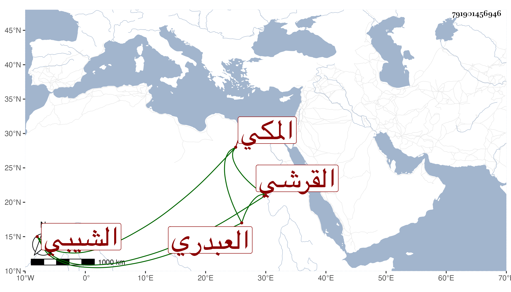

0902Sakhawi.DawLamic.ITO20230111-ara1.EIS1600.791901456946
Biography ID: 791901456946
1256
يوسف بن محمد بن علي بن محمد بن إدريس بن غانم بن مفرج الجمال بن أبي راجح القرشي العبدري الشيبي المكي الماضي أبوه وأخوه عمر ويعرف بابن أبي راجح . استقر في حجابة الكعبة بعد يحيى بن أحمد الشيبي في آخر سنة أربعين أو في التي تليها . ومات في ربيع الأول سنة ثلاث وأربعين بها . أرخه ابن فهد .
